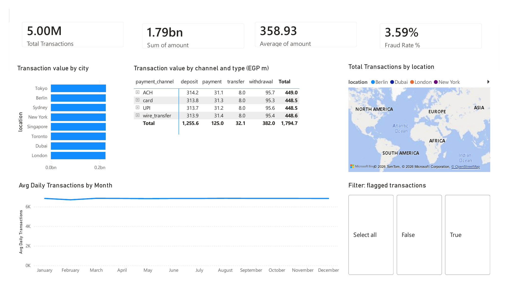

Risk Analytics Dashboard
Fraud Detection & Risk Monitoring
An interactive Power BI dashboard designed to monitor fraudulent transactions across payment channels, regions, and time periods — surfacing the patterns risk teams need to act on.
Key Insights
- Detected unusual transaction behavior across specific regions
- Identified high-risk payment channels with elevated fraud activity
- Highlighted peak periods where fraud cases increased noticeably
Business Impact
- Improved visibility into risky transactions
- Supported fraud monitoring and investigation workflows
- Helped identify fraud-prone areas faster